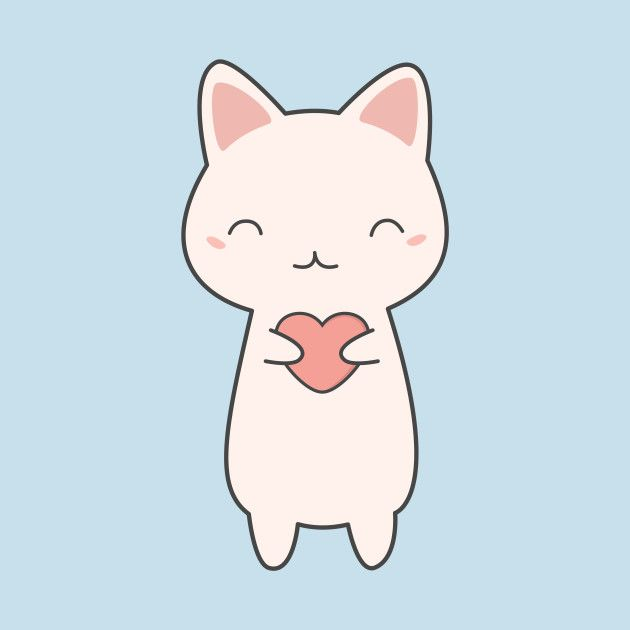

Император Веспасиан приходит в поликлинику.
- Хочу сделать тест на ковид.
- А какие симптомы?
- Деньги не пахнут!
Кот, обидевшись на то, что его шлепнули тапком, внес в ссанкционный список коврик в прихожей, диван в гостиной и вышеупомянутые тапочки. В случае повторения актов агрессии обещал расширить список ссанкций.
– Ты чего такой грустный?
– Захожу вчера в метро, смотрю – сидит обалденная девушка. Молодая, ноги от ушей, красавица… Я ей и подмигнул…
– А она?
– Встала и уступила мне место!
На кухню пришла Маша (4 года):
— Папа, я хочу херню.
— На, дочка, только помой ее и запомни — это называется хурма
При составлении завещания Альфред Нобель решил существенную часть своего состояния направить на учреждение премии. Он придумал несколько серьезных номинаций и две шуточные, заранее понимая, что их никому никогда не получить: первому родившему мужчине и первому черному президенту Америки…
| Все люди делятя на 3 категории | ||
| Совы (встают и ложатся поздно). | Жаворонки (встают и ложатся рано). | Дятлы - из-за них совы встают рано, а жаворонки ложатся поздно. |